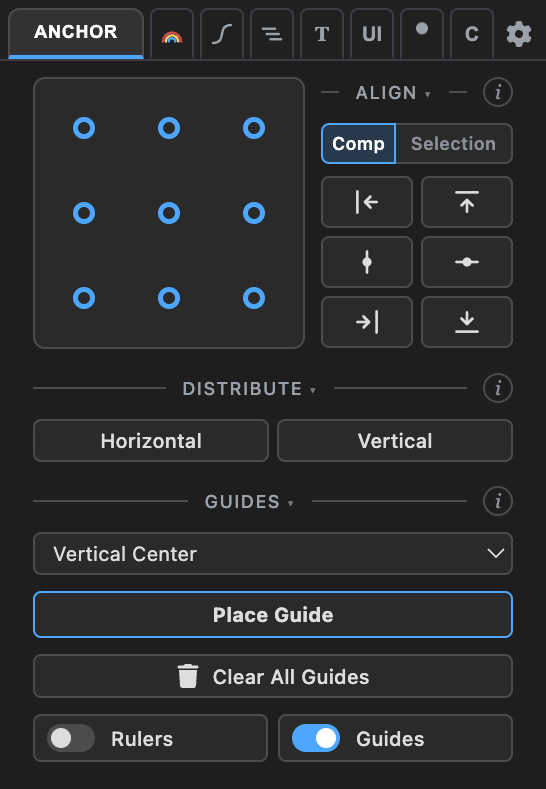
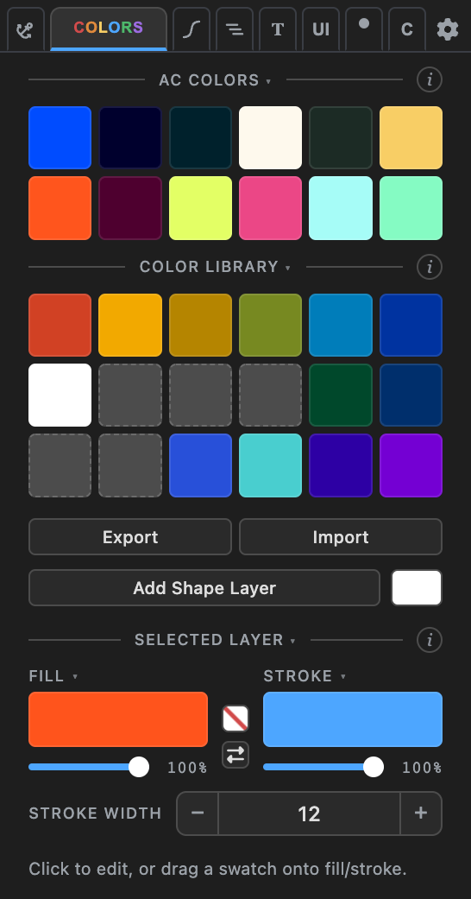
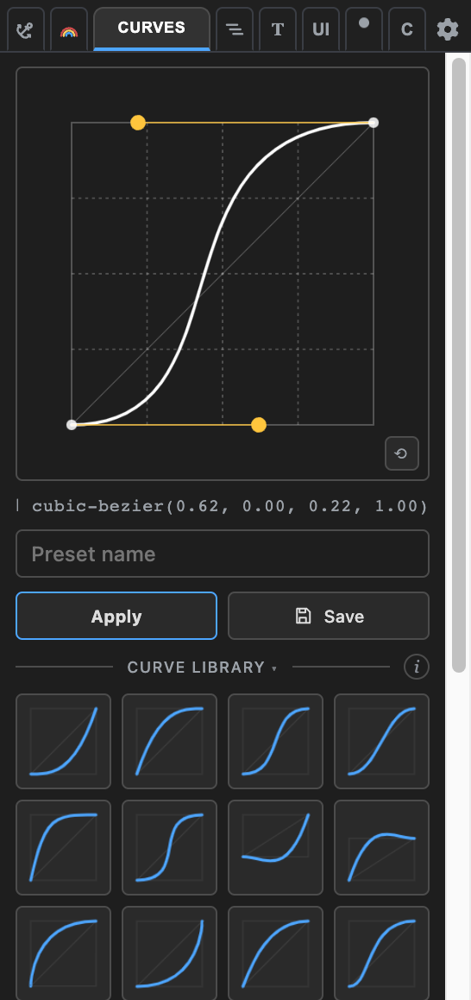

ANCHOR BUDDY
A motion designer's utility panel for After Effects — anchor points, alignment, colors, easing curves, layer tools, and text rigs, in one panel.
What's inside
Anchor — one-click anchor placement (mask-aware), align & distribute, comp guides.
Colors — a color library and fill/stroke editing: eyedropper, on/off, one-click swap.
Curves — copy, paste, and preset easing curves between keyframes.
Layers — stagger, reverse order, batch rename.
Type — counters, text splitting, box rigs, wave and cascade animators.
UI Suite — UI builder rigs, corner control, null tools, vector rebuilds, liner.
Animation — posterizer, randomizer, motion time, point-at rigs, blob noise.
Custom — collect your favorite tools into one tab, in your order.



Setup
- Install the extension — open the
.zxpwith a ZXP installer (aescripts ZXP Installer is free). - Restart After Effects and open Window → Extensions → Anchor Buddy.
The extension is signed with a self-signed certificate — your ZXP installer may show an "unverified publisher" notice. That's expected.
Requirements
After Effects 2020 or later (developed and tested on AE 2026) · macOS and Windows. Everything runs locally in the panel — no accounts, no network calls.